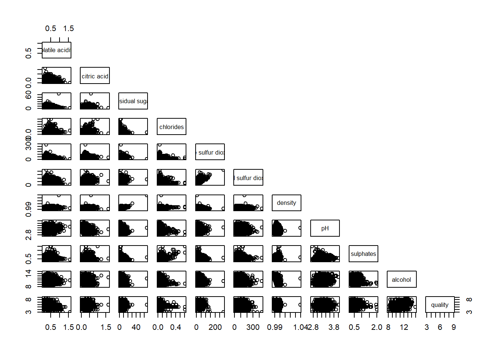
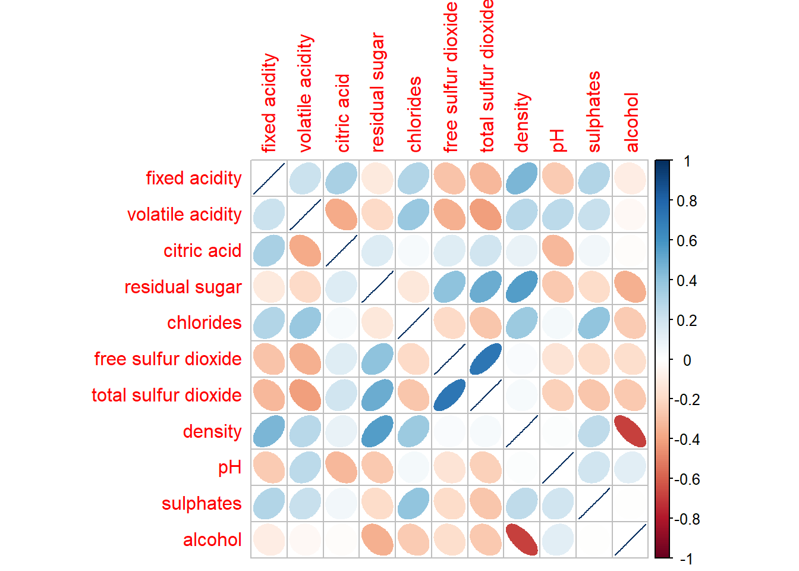
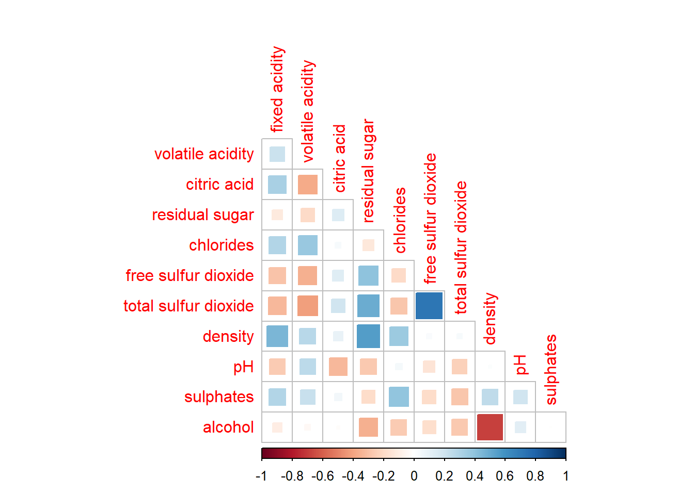

Code
pacman::p_load(corrplot, ggstatsplot, tidyverse)With the assistance of ChatGPT
The correlation coefficient is a widely used statistic for measuring the type and strength of the relationship between two variables. It ranges from -1.0 to 1.0, where 1.0 indicates a perfect positive linear relationship, -1.0 signifies a perfect inverse relationship, and 0.0 represents no linear correlation.
When dealing with multivariate data, the correlation coefficients for all variable pairs are typically presented in a correlation matrix or scatterplot matrix.
A correlation matrix is computed for three main reasons:
For large datasets with many observations and variables, a corrgram is often used to visually explore relationships and patterns. It is designed with two key principles:
In this hands-on exercise, we will learn data visualization for correlation matrices in R, covering three key sections:
We will use the following code chunk in RStudio to install and load the required packages: corrplot, ggpubr, plotly, and tidyverse for data visualization and analysis.
pacman::p_load(corrplot, ggstatsplot, tidyverse)In this exercise, we will use the Wine Quality Dataset from the UCI Machine Learning Repository, which contains 13 variables and 6,497 observations. The dataset combines both red and white wine data into a single CSV file named wine_quality.
wine <- read_csv("data/wine_quality.csv")We will check the dataset using below
glimpse(): provides a transposed overview of a dataset, showing variables and their types in a concise format.head(): displays the first few rows of a dataset (default is 6 rows) to give a quick preview of the data.summary(): generates a statistical summary of each variable, including measures like mean, median, and range for numeric data.duplicated():returns a logical vector indicating which elements or rows in a vector or data frame are duplicates.Sum(is.na()): counts the number of missing values (NA) in each column of the data frame.spec(): use spec() to quickly inspect the columnglimpse(wine)Rows: 6,497
Columns: 13
$ `fixed acidity` <dbl> 7.4, 7.8, 7.8, 11.2, 7.4, 7.4, 7.9, 7.3, 7.8, 7…
$ `volatile acidity` <dbl> 0.700, 0.880, 0.760, 0.280, 0.700, 0.660, 0.600…
$ `citric acid` <dbl> 0.00, 0.00, 0.04, 0.56, 0.00, 0.00, 0.06, 0.00,…
$ `residual sugar` <dbl> 1.9, 2.6, 2.3, 1.9, 1.9, 1.8, 1.6, 1.2, 2.0, 6.…
$ chlorides <dbl> 0.076, 0.098, 0.092, 0.075, 0.076, 0.075, 0.069…
$ `free sulfur dioxide` <dbl> 11, 25, 15, 17, 11, 13, 15, 15, 9, 17, 15, 17, …
$ `total sulfur dioxide` <dbl> 34, 67, 54, 60, 34, 40, 59, 21, 18, 102, 65, 10…
$ density <dbl> 0.9978, 0.9968, 0.9970, 0.9980, 0.9978, 0.9978,…
$ pH <dbl> 3.51, 3.20, 3.26, 3.16, 3.51, 3.51, 3.30, 3.39,…
$ sulphates <dbl> 0.56, 0.68, 0.65, 0.58, 0.56, 0.56, 0.46, 0.47,…
$ alcohol <dbl> 9.4, 9.8, 9.8, 9.8, 9.4, 9.4, 9.4, 10.0, 9.5, 1…
$ quality <dbl> 5, 5, 5, 6, 5, 5, 5, 7, 7, 5, 5, 5, 5, 5, 5, 5,…
$ type <chr> "red", "red", "red", "red", "red", "red", "red"…head(wine)# A tibble: 6 × 13
`fixed acidity` `volatile acidity` `citric acid` `residual sugar` chlorides
<dbl> <dbl> <dbl> <dbl> <dbl>
1 7.4 0.7 0 1.9 0.076
2 7.8 0.88 0 2.6 0.098
3 7.8 0.76 0.04 2.3 0.092
4 11.2 0.28 0.56 1.9 0.075
5 7.4 0.7 0 1.9 0.076
6 7.4 0.66 0 1.8 0.075
# ℹ 8 more variables: `free sulfur dioxide` <dbl>,
# `total sulfur dioxide` <dbl>, density <dbl>, pH <dbl>, sulphates <dbl>,
# alcohol <dbl>, quality <dbl>, type <chr>summary(wine) fixed acidity volatile acidity citric acid residual sugar
Min. : 3.800 Min. :0.0800 Min. :0.0000 Min. : 0.600
1st Qu.: 6.400 1st Qu.:0.2300 1st Qu.:0.2500 1st Qu.: 1.800
Median : 7.000 Median :0.2900 Median :0.3100 Median : 3.000
Mean : 7.215 Mean :0.3397 Mean :0.3186 Mean : 5.443
3rd Qu.: 7.700 3rd Qu.:0.4000 3rd Qu.:0.3900 3rd Qu.: 8.100
Max. :15.900 Max. :1.5800 Max. :1.6600 Max. :65.800
chlorides free sulfur dioxide total sulfur dioxide density
Min. :0.00900 Min. : 1.00 Min. : 6.0 Min. :0.9871
1st Qu.:0.03800 1st Qu.: 17.00 1st Qu.: 77.0 1st Qu.:0.9923
Median :0.04700 Median : 29.00 Median :118.0 Median :0.9949
Mean :0.05603 Mean : 30.53 Mean :115.7 Mean :0.9947
3rd Qu.:0.06500 3rd Qu.: 41.00 3rd Qu.:156.0 3rd Qu.:0.9970
Max. :0.61100 Max. :289.00 Max. :440.0 Max. :1.0390
pH sulphates alcohol quality
Min. :2.720 Min. :0.2200 Min. : 8.00 Min. :3.000
1st Qu.:3.110 1st Qu.:0.4300 1st Qu.: 9.50 1st Qu.:5.000
Median :3.210 Median :0.5100 Median :10.30 Median :6.000
Mean :3.219 Mean :0.5313 Mean :10.49 Mean :5.818
3rd Qu.:3.320 3rd Qu.:0.6000 3rd Qu.:11.30 3rd Qu.:6.000
Max. :4.010 Max. :2.0000 Max. :14.90 Max. :9.000
type
Length:6497
Class :character
Mode :character
wine[duplicated(wine),]# A tibble: 1,177 × 13
`fixed acidity` `volatile acidity` `citric acid` `residual sugar` chlorides
<dbl> <dbl> <dbl> <dbl> <dbl>
1 7.4 0.7 0 1.9 0.076
2 7.5 0.5 0.36 6.1 0.071
3 7.9 0.43 0.21 1.6 0.106
4 7.3 0.45 0.36 5.9 0.074
5 7.2 0.725 0.05 4.65 0.086
6 8.8 0.41 0.64 2.2 0.093
7 8.6 0.49 0.28 1.9 0.11
8 7.7 0.49 0.26 1.9 0.062
9 8.1 0.545 0.18 1.9 0.08
10 8.1 0.575 0.22 2.1 0.077
# ℹ 1,167 more rows
# ℹ 8 more variables: `free sulfur dioxide` <dbl>,
# `total sulfur dioxide` <dbl>, density <dbl>, pH <dbl>, sulphates <dbl>,
# alcohol <dbl>, quality <dbl>, type <chr>sum(is.na(wine)) [1] 0spec(wine)cols(
`fixed acidity` = col_double(),
`volatile acidity` = col_double(),
`citric acid` = col_double(),
`residual sugar` = col_double(),
chlorides = col_double(),
`free sulfur dioxide` = col_double(),
`total sulfur dioxide` = col_double(),
density = col_double(),
pH = col_double(),
sulphates = col_double(),
alcohol = col_double(),
quality = col_double(),
type = col_character()
)The wine tibble contains 13 attributes, as shown above:
Categorical attributes: quality, type
Continuous attributes: fixed acidity volatile acidity citric acid residual sugar chlorides free sulfur dioxide total sulfur dioxide density pH sulphates alcohol
pairs() methodR offers multiple ways to create a scatterplot matrix. In this section, we will use the pairs() function from R Graphics to build a correlation matrix.
Before proceeding, we will review and read the syntax description of the pairs() function.
Figure below shows the scatter plot matrix of Wine Quality Data. It is a 11 by 11 matrix.
pairs(wine[,1:11])
The pairs() function in R requires a matrix or data frame as input.
To create a scatterplot matrix, a simple code chunk is used with the default pairs() function.
In the below code, columns 2 to 12 of the wine data frame are selected, including variables such as fixed acidity, volatile acidity, citric acid, residual sugar, chlorides, free sulfur dioxide, total sulfur dioxide, density, pH, sulphates, and alcohol.
pairs(wine[,2:12])
The pairs() function in R Graphics offers various customization options. Since a correlation matrix is symmetric, it is common to display only the upper or lower half.
To show the lower half, the upper.panel argument is used, as demonstrated in the following code chunk.
pairs(wine[,2:12], upper.panel = NULL)
To show the upper half, the lower.panel argument is used, as demonstrated in the following code chunk.
pairs(wine[,2:12], lower.panel = NULL)
To display correlation coefficients instead of scatter plots, the panel.cor function is used, with higher correlations shown in a larger font.
panel.cor <- function(x, y, digits=2, prefix="", cex.cor, ...) {
usr <- par("usr")
on.exit(par(usr))
par(usr = c(0, 1, 0, 1))
r <- abs(cor(x, y, use="complete.obs"))
txt <- format(c(r, 0.123456789), digits=digits)[1]
txt <- paste(prefix, txt, sep="")
if(missing(cex.cor)) cex.cor <- 0.8/strwidth(txt)
text(0.5, 0.5, txt, cex = cex.cor * (1 + r) / 2)
}
pairs(wine[,2:12],
upper.panel = panel.cor)
ggcormat()A key limitation of the correlation matrix is that scatterplots become cluttered when the dataset is large (over 500 observations). To address this, the Corrgram visualization technique, proposed by Murdoch & Chow (1996) and Friendly (2002), will be used.
There are at least three R packages - corrgram, - ellipse, and - corrplot
which offer functions to plot corrgrams.
Additionally, packages like ggstatsplot include functions for building corrgrams.
In the below section, we will learn how to visualize a correlation matrix using the ggcorrmat() function from the ggstatsplot package.
A key advantage of using ggcorrmat() over other methods for visualizing a correlation matrix is its ability to generate a comprehensive and professional statistical report, enhancing clarity and interpretability.
ggstatsplot::ggcorrmat(
data = wine,
cor.vars = 1:11)
ggstatsplot::ggcorrmat(
data = wine,
cor.vars = 1:11,
ggcorrplot.args = list(outline.color = "black",
hc.order = TRUE,
tl.cex = 10),
title = "Correlogram for wine dataset",
subtitle = "Four pairs are no significant at p < 0.05"
)
Some of the key takeaways from the code above: - cor.vars – Defines the variables for computing the correlation matrix in the corrgram. - ggcorrplot.args – Adds aesthetic customizations for ggcorrplot::ggcorrplot, excluding internally used arguments like corr, method, p.mat, sig.level, ggtheme, colors, lab, pch, legend.title, and digits.
A sample sub-code chunk below can be used to customize specific plot components, such as font size for the x-axis, y-axis, and statistical report.
ggplot.component = list(
theme(text=element_text(size=5),
axis.text.x = element_text(size = 8),
axis.text.y = element_text(size = 8)))Since ggstatsplot extends ggplot2, it supports faceting. However, faceting is not available in ggcorrmat() but is supported in grouped_ggcorrmat() from ggstatsplot.
grouped_ggcorrmat(
data = wine,
cor.vars = 1:11,
grouping.var = type,
type = "robust",
p.adjust.method = "holm",
plotgrid.args = list(ncol = 2),
# Optimizing appearance for clarity
ggcorrplot.args = list(
outline.color = "black",
hc.order = TRUE,
tl.cex = 5, # Adjust text size to prevent overlap
tl.srt = 45, # Rotate text for better alignment
lab_size = 1 # Adjust label size for better readability (without lab=TRUE)
),
# Improving annotation clarity
annotation.args = list(
tag_levels = "a",
title = "Correlogram for Wine Dataset",
subtitle = "Correlation between key chemical properties of red and white wines",
caption = "Dataset: UCI Machine Learning Repository"
)
)Some of the key takeaways from the code above: - grouping.var – The only required argument to create a facet plot in grouped_ggcorrmat(). - Patchwork Package – Used behind the scenes for multi-plot layouts. - plotgrid.args – Passes additional arguments to patchwork::wrap_plots, except for guides, which is set separately. - annotation.args – Specifies plot annotation arguments from the patchwork package.
We read on the review “An Introduction to corrplot Package” to gain a basic understanding of corrplot package.
Before using corrplot() to create a corrgram, the correlation matrix of the wine data frame must be computed. This is done using the cor() function from R Stats, as shown in the code chunk below.
wine.cor <- cor(wine[, 1:11])The corrplot() function is then used to plot the corrgram with its default settings, as shown in the code chunk below.
corrplot(wine.cor)
By default, corrplot() uses circles for visualization and a symmetric matrix layout. The color scheme is blue-red, where:
The corrplot package offers seven visualization methods (method parameter) to represent correlation values: circle (default), square, ellipse, number, shade, color, and pie.
The default circle representation can be modified using the method argument, as demonstrated in the code chunk below.
corrplot(wine.cor,
method = "ellipse") 
corrplot(wine.cor,
method = "square") corrplot(wine.cor,
method = "number") corrplot(wine.cor,
method = "shade")corrplot(wine.cor,
method = "color")corrplot(wine.cor,
method = "pie")corrplot() supports three layout types: “full” (default), “upper”, and “lower”.
The default full matrix display can be modified using the type argument.
corrplot(wine.cor,
method = "ellipse",
type="lower")
corrplot(wine.cor,
method = "square",
type="upper")corrplot(wine.cor,
method = "pie",
type="full")
The corrgram layout can be further customized. For example:
diag = FALSE - removes diagonal cells.tl.col = "black" - changes axis text labels to black.corrplot(wine.cor,
method = "ellipse",
type="lower",
diag = FALSE,
tl.col = "black")
Further exploration:
tl.pos - Position of the text labelslt, ld, td, d, l or n.
lt(default if type=full) means left and top,ld(default if type=lower) means left and diagonaltd(default if type=upper) means top and diagonal(near)d means diagonal, l means left,n means don’t add text-label.corrplot(wine.cor,
method = "number",
type="lower",
diag = FALSE,
tl.pos = "lt")tl.cex - size of text label (variable names).corrplot(wine.cor,
method = "square",
type="lower",
diag = FALSE,
tl.cex = 1)
Modifies text label spacing
corrplot(wine.cor,
method = "ellipse",
type="lower",
diag = FALSE,
tl.offset = 2)tl.cex - text label string rotation in degrees.corrplot(wine.cor,
method = "ellipse",
type="upper",
diag = FALSE,
tl.srt = 45 )cl.pos - Moves the color legend, in this case, it is “b” - bottomcorrplot(wine.cor,
method = "pie",
type="upper",
diag = FALSE,
cl.pos = "b" )cl.cex- Adjusts color legend text sizecorrplot(wine.cor,
method = "color",
type="upper",
diag = FALSE,
cl.cex = 2 )cl.offset- Adjusts color legend positioningcorrplot(wine.cor,
method = "shade",
type="upper",
diag = FALSE,
cl.offset = 0.5 )The corrplot package allows creating a mixed corrgram, where one half displays a visual matrix and the other half shows numerical values. This is achieved using corrplot.mixed(), a specialized function for mixed visualization styles.
Figure below shows a mixed layout corrgram plotted using wine quality data.
corrplot.mixed(wine.cor,
lower = "shade",
upper = "number",
tl.pos = "lt",
diag = "l",
tl.col = "green",
tl.srt = 45)corrplot.mixed(wine.cor,
lower = "circle",
upper = "square",
tl.pos = "lt",
diag = "l",
tl.col = "red")In corrplot.mixed(), the arguments lower and upper define the visualization methods for each half of the corrgram (e.g., circles for the lower half and squares for the upper half).
tl.pos : controls the placement of axis labels.diag : specifies the glyph style on the diagonal of the corrgram.In statistical analysis, it’s important to determine which variable pairs have statistically significant correlations.
The corrgram with significance testing reveals that not all correlations are significant. For example:
The correlation between total sulfur dioxide and free sulfur dioxide is significant at a 0.1 level.
However, the correlation between total sulfur dioxide and citric acid is not statistically significant.
We can use the cor.mtest() to compute the p-values and confidence interval for each pair of variables.
wine.sig = cor.mtest(wine.cor, conf.level= .95)We can then use the p.mat argument of corrplot function as shown in the code below.
corrplot(wine.cor,
method = "number",
type = "lower",
diag = FALSE,
tl.col = "black",
tl.srt = 45,
p.mat = wine.sig$p,
sig.level = .05)
Matrix reordering is crucial for uncovering hidden structures and patterns in a corrgram. By default, attributes are sorted based on the original correlation matrix, but this can be changed using the order argument in corrplot().
Supported Sorting Methods in corrplot():
corrplot.mixed(wine.cor,
lower = "shade",
upper = "number",
tl.pos = "lt",
diag = "l",
order="AOE",
tl.col = "black")corrplot.mixed(wine.cor,
lower = "ellipse",
upper = "number",
tl.pos = "lt",
diag = "l",
order="FPC",
tl.col = "blue")corrplot(wine.cor,
method = "ellipse",
tl.pos = "lt",
tl.col = "purple",
order="hclust",
hclust.method = "centroid",
addrect = 5)corrplot.mixed(wine.cor,
lower = "circle",
upper = "number",
tl.pos = "lt",
diag = "l",
order="alphabet",
tl.col = "pink")When using hclust in corrplot(), hierarchical clustering can be applied to group similar variables, and rectangles can be drawn around clusters in the corrgram to highlight these groupings.
There are seven supported methods:
| Method | Description | Strengths | Weaknesses |
|---|---|---|---|
| ward.D / ward.D2 | Minimizes variance | Compact, balanced clusters | Sensitive to outliers |
| single | Merges based on closest points | Can handle noisy data | Creates elongated chains |
| complete | Merges based on farthest points | Well-separated clusters | Can over-separate data |
| average | Uses average distances | Good balance of compactness & separation | Can struggle with noisy data |
| mcquitty | Weighted version of average | Less computationally expensive | Less balanced clusters |
| median | Uses median distances | Handles outliers well | Less commonly used |
| centroid | Uses centroid of clusters | Computationally efficient | Can create inconsistent results |
corrplot(wine.cor,
method = "ellipse",
tl.pos = "lt",
tl.col = "black",
order="hclust",
hclust.method = "ward.D",
addrect = 3)
corrplot(wine.cor,
method = "number",
tl.pos = "lt",
tl.col = "black",
order = "hclust",
hclust.method = "single",
addrect = 4) corrplot(wine.cor,
method = "ellipse",
tl.pos = "t",
tl.col = "blue",
order = "hclust",
hclust.method = "complete",
addrect = 6) corrplot(wine.cor,
method = "shade",
tl.pos = "lt",
tl.col = "black",
order="hclust",
hclust.method = "average",
addrect = 8)corrplot(wine.cor,
method = "shade",
tl.pos = "lt",
tl.col = "black",
order="hclust",
hclust.method = "mcquitty",
addrect = 6)corrplot(wine.cor,
method = "square",
tl.pos = "n",
order = "hclust",
hclust.method = "median",
addrect = 5,
cl.pos = "b") corrplot(wine.cor,
method = "color",
tl.pos = "d",
tl.col = "red",
order = "hclust",
hclust.method = "centroid",
addrect = 7) # Draw 7 clustersggcorrmat() for clean, report-friendly visualizations.corrplot() for more customization and clustering insights.| Functions | Purpose |
|---|---|
pairs() |
Scatterplot matrix |
ggcorrmat() |
Statistical correlogram |
grouped_ggcorrmat() |
Faceted correlogram |
corrplot() |
Highly customizable correlation matrix |
corrplot.mixed() |
Mixed visual/numerical correlation matrix |
cor.mtest() |
Computes p-values for significance testing |
order in corrplot() |
Reorders matrix based on structure |